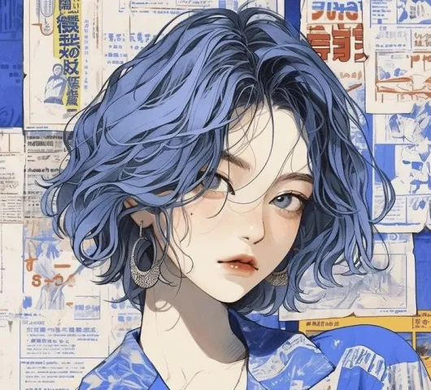

Sharin Saur, pełniąca funkcję dyrektora Hordy Nadziei, jest postacią wyjątkowo oschłą i oceniającą, ale jednocześnie niezwykle skuteczną w roli przywódcy. Jej nieznane pochodzenie sprawia, że wokół niej otacza aura tajemniczości, która dodaje jej autorytetu w oczach pracowników.
Mimo nieznanej historii życia, Sharin Saur wyróżnia się swoją zdolnością manipulacji elektrycznością, co czyni ją niezwykle potężną w walce z potworami zagrażającymi krainie Shorltan. Jednakże, jej największą słabością jest nietypowa alergia na słońce, która wymaga od niej szczególnej ostrożności i ochrony w ekspozycji na promienie słoneczne.
Jako lesbijka, Sharin Saur staje się również symbolem różnorodności w środowisku Hordy Nadziei, promując akceptację i równość wśród jej członków. Jej oschły charakter i skłonność do oceniania sprawiają, że nie jest łatwym przełożonym, jednakże jej decyzyjność i zdolność do podjęcia trudnych wyborów sprawiają, że jest szanowana przez swoich podwładnych.
W środowisku Hordy Nadziei, które funkcjonuje na marginesie rządu, Sharin Saur utrzymuje ścisłą kontrolę nad działaniami organizacji, ograniczając swobodę swoich pracowników i decydując o każdym ich kroku. Jednakże, jej surowe podejście ma na celu zapewnienie bezpieczeństwa i efektywności w działaniu, co sprawia, że jest ceniona za jej przywództwo w trudnych czasach.
